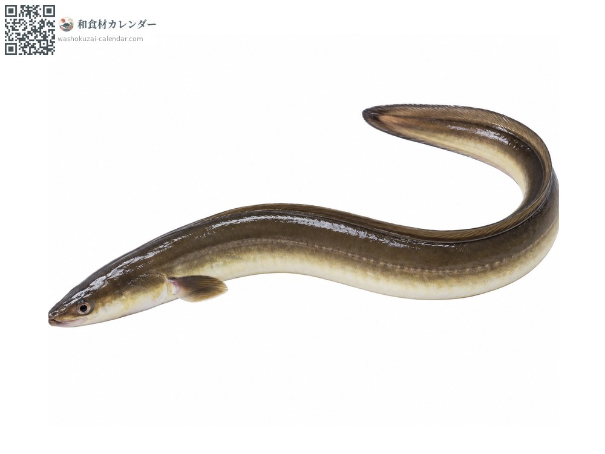
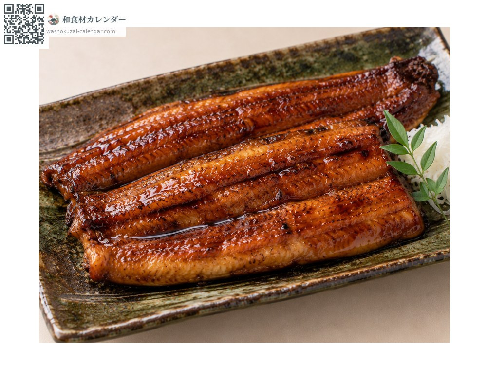
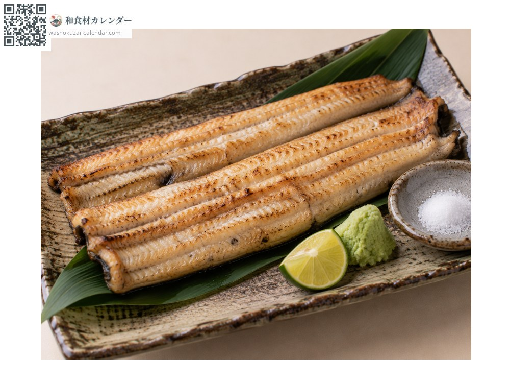
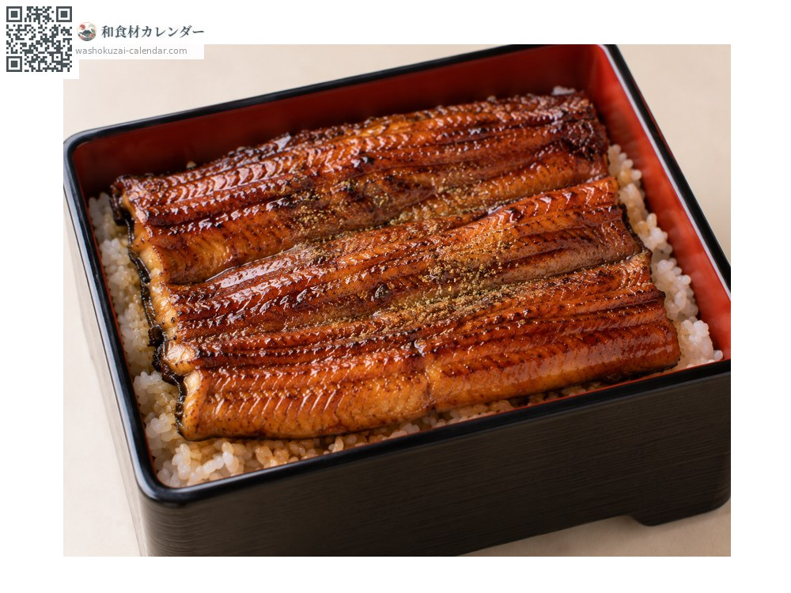
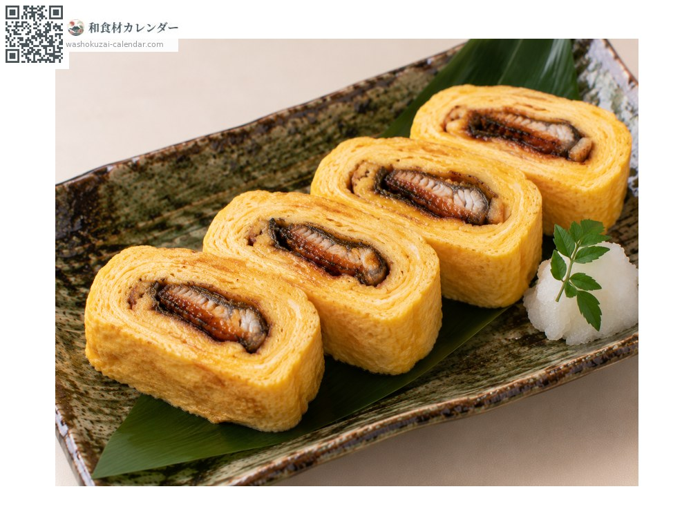

海鲜
日本鳗
ウナギ うなぎ unagi
别名unagi
应季时期为10月、11月

应季时期
1月
2月
3月
4月
5月
6月
7月
8月
9月
10月
11月
12月
应季有供应
烹饪方法

蒲烧
剖开串起后刷酱烧烤。关东先蒸过再烤，关西则不蒸直接烤。

白烧
不刷酱直接烤。配山葵酱油或盐。

鳗鱼饭
把蒲烧铺在饭上，撒上山椒粉。

鳗鱼玉子烧
用玉子烧把蒲烧卷起来，是下酒的好菜。
挑选方法
体表有黏液、腹部泛黄。鱼身紧实。
保存方法
基本上以活鳗处理。蒲烧冷藏可放2至3天，也能冷冻。
主要产地
小知识
天然鳗的时令是秋冬，但因为土用丑日的习俗，需求反而集中在夏天。鳗苗的捕获量逐年减少。